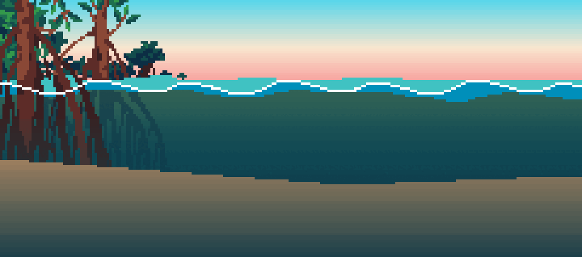
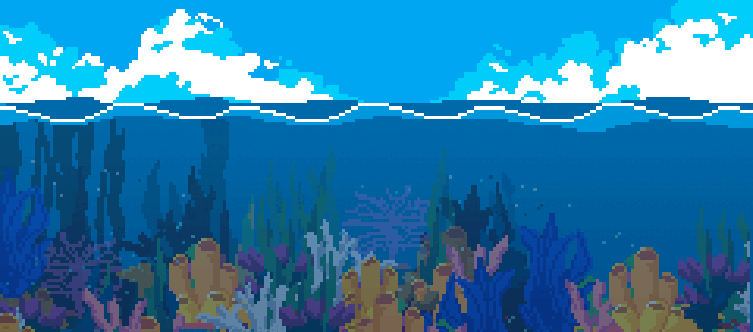
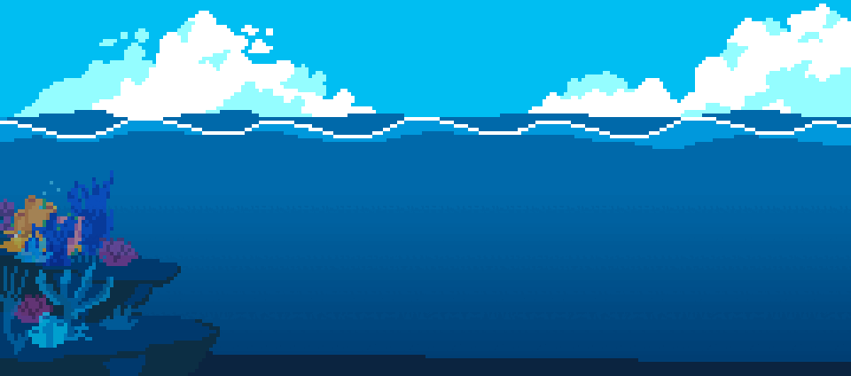
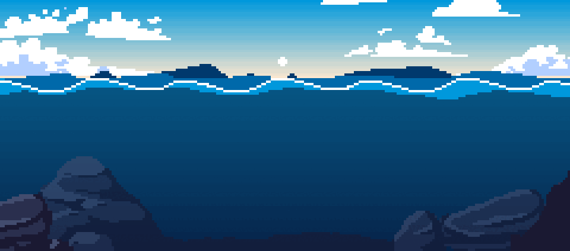
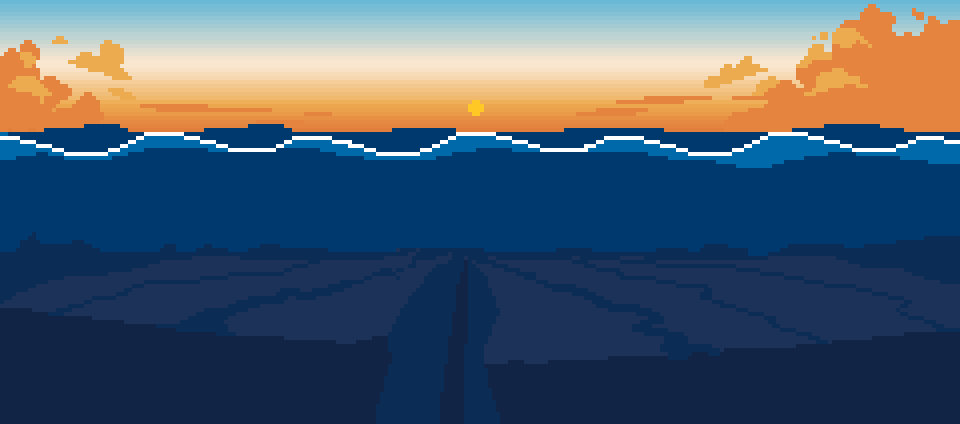

A Discord fishing game
Eighty-eight real species across three seas, each with its own money, its own tackle and its own fish. Cast, wait, and reel the moment the float goes under.
A fish that walks. It breathes through its skin and the lining of its mouth, and drowns if it is kept underwater too long.

Every one hatches male. The dominant fish in an anemone becomes female, and if she dies her partner changes sex to replace her.
One of only two vertebrates on earth whose blue comes from actual blue pigment. Every other blue animal is faking it with structural colour.
Vulnerable. Sleeps in caves in groups, which made it trivially easy to spear at night, which is most of why it is Vulnerable.
The first fish you cannot sell live here. Carry tag kits and a bumphead is tagged and let go for research credit, and research credit is the only thing that opens deeper water.
▼ Deeper · the drop-off
Hits so hard it has been filmed taking birds off the surface in mid-flight.
Endangered, and worth more alive than almost any reef fish alive is worth dead. Every one starts female; a few become male at around nine years old.
Endangered. Grazes seagrass like a lawn and returns to the beach it hatched on to nest, decades later and thousands of miles away.
From here on the fish can be heavier than your line. A snap costs you the lure, and the reel you started with will not hold a trevally for long.
▼ Deeper · blue water
Grows from egg to a metre long inside a year, and loses its colour within minutes of dying.
Warm-blooded in the muscle and the eye, which lets it hunt in cold water its prey cannot think straight in.
Endangered, and the largest fish alive. The pattern of spots behind the gills is unique to each one, like a fingerprint.
Rarer fish give you less time. A mahi-mahi allows three seconds. A sailfish gives you under two.
▼ Deeper · the trench
Its jaws are on a hinge and fire forward out of its face to catch prey, then fold back flat. The last survivor of a family 125 million years old.
Barely 250 have ever been recorded anywhere, and the Philippines has produced more of them than almost anywhere else.
Eyes the size of dinner plates, the largest of any animal that has ever lived. Nobody photographed a live one until 2004.
The trench takes a research permit, and research credit cannot be bought. It is earned one tag at a time. Land a giant squid and you get three quarters of a second to set the hook.
Then the North Atlantic, in pounds, and the Adriatic, in euros. Money from one sea is no use in the next. Five leaderboards, per server and worldwide, and nothing you can buy moves any of them.